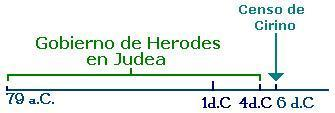
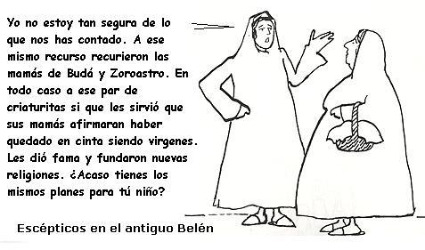

¿Por qué los ateos no creemos la historia de navidad?
En un reporte de Sociedades Bíblicas Unidas de 2007 1 se afirma que solo uno de cada ocho personas conoce la “verdadera” historia de navidad en Gran Bretaña. En ella apuntaban que el 88% desconocía uno o varios detalles del relato bíblico de la navidad. Puede que solo un pequeño porcentaje de la población conozca la historia bíblica, ¿pero es el relato de los Evangelios fiable sobre el nacimiento de Jesús? ¿Tienen los cristianos también algo que aprender sobre este hecho? Este tema lo abordaremos en el presente escrito analizando el relato bíblico.
La historia comienza narrando que un ángel se le presentó a María. El Evangelio de Mateo le llama “El ángel del Señor”, mientras que el Evangelio de Lucas le da nombre, lo llama Gabriel. Este ser angélico tiene por misión informarle a María que estaba esperando un hijo del Espíritu Santo. El esposo de María, José, también recibió la visita del ángel (algo narrado por Mateo, mas no por Lucas) y este le pide a José que aceptara a su esposa ya que estaba esperando un hijo del Espíritu Santo.
La advertencia del ángel era muy importante porque José podía repudiar a su esposa y esta moriría apedreada de llevarse a cabo lo sentenciado en el machista libro bíblico del Deuteronomio:
“Cuando alguno tomare mujer, y después de haberse llegado a ella la aborreciere, (…) y dijese: A esta mujer tomé, y me llegue a ella, y no la halle virgen; entonces el padre de la joven y su madre tomaran y sacaran las señales de la virginidad de la doncella a los ancianos de la ciudad en la puerta; y dirá el padre de la joven a los ancianos: Yo di mi hija a este joven y él la aborrece; (…) pero ved aquí las señales de la virginidad de mi hija. Y extenderá las vestiduras delante de los ancianos de la ciudad. Entonces los ancianos tomaran al hombre y lo castigaran; y le multaran en 100 piezas de plata (…) Más si resultase verdad que no se halló virginidad en la joven, entonces la sacaran (…) y la apedrearan los hombres de la ciudad, y morirá…”
—Deuteronomio 22: 13-21
Por lo que creen los cristianos se deduce que la lapidación antes de nacer no sería el destino de Jesús, ya que su inmolación estaba predestinada para 33 años después. Por lo tanto, Jesús aquí se salvaría.
Cuando comparamos los evangelios entre sí aparecen varios errores que nos hacen dudar de la veracidad de la historia de navidad. Al comparar los evangelios de Mateo y de Lucas encontramos un error cronológico. Lucas pone a José y María en camino a Belén como resultado de un censo en el que todo mundo debía viajar a su pueblo de origen -algo totalmente descabellado- pero que el evangelista usó como recurso en su historia para poner a Jesús naciendo en Belén:
Aconteció que en aquellos días, que se promulgó un edicto de parte de Augusto César, que todo el mundo fuese empadronado. Este primer censo se hizo siendo Quirenio gobernador de Siria. E iban todos para ser empadronados, cada uno a su ciudad.
—Lucas 2:1-3
El censo si tuvo lugar, pero no fue necesario que la gente viajara a su ciudad de origen. Simplemente cada uno fue censado donde vivía. El problema es que este censo se llevó a cabo en el año 6 d.C. y para ese entonces Herodes ya llevaba diez años de muerto. ¿Entonces como es posible que Herodes haya mandado matar a los niños de Belén y sus alrededores después del nacimiento de Jesús? El mismo Evangelio de Lucas empieza su narración del nacimiento de Jesús diciendo: Hubo en tiempos de Herodes (Lucas 1:5). Simplemente lo de la muerte de los inocentes es un invento de Mateo. Ningún historiador de la época cuenta esta historia.
Al Afirmar Lucas que Cristo nació bajo Herodes, sitúa su nacimiento cuando menos cuatro años antes de la era cristiana; y al afirmar que nació bajo el censo de Quirinio, lo sitúa seis años después de aquella. Las contradicciones entre los evangelistas son incontables y dejan mal parado al Altísimo que los inspiró, pero ésta de Lucas consigo mismo es imperdonable. ¡Que esperanzas podemos tener los que buscamos probarle a los ateos la existencia real de Cristo, si uno de sus cuatro biógrafos oficiales no sabe ni siquiera en qué año nació! Lucas lo pone a nacer en un lapso de 10 años y ni cuenta se da. Por eso nos tienen apabullados los que dicen que Cristo es un mito más del Cercano Oriente adoptado y adaptado por la Puta (La Iglesia Católica) para sus fines y no un personaje histórico.
—Fernando Vallejo, La Puta de Babilonia, Pág. 80 & 81
Los evangelistas tampoco se ponen de acuerdo sobre el abuelo paterno de Jesús, claro está por parte de José, no del Espíritu santo, porque los fantasmas no tienen abuelitos. Según Mateo el padre de José fue un tal Jacob, y según Lucas fue un tal Elí. Y no es que se llamara Jacob Elí, pues las dos genealogías son muy opuestas. De hecho la de Mateo afirma que Jesús viene del legendario rey David por parte de su hijo Salomón, mientras que Lucas lo pone a descender de otro hijo de David, de Natán. Parece ser que el Espíritu Santo, quien según los cristianos inspiró la Biblia mandó dos archivos diferentes y no se dio cuenta. O quizás este Espíritu es tan real como Casper. Observa la comparación entre las dos genealogías en el siguiente gráfico:

El primer Evangelio en ser escrito fue el de Marcos. Este se escribió por temprano en el año 70 d.C. o en el 90 d. C. Ningún evangelio fue escrito por los apóstoles, razón por la que no hay escritos de testigos oculares de los hechos de la navidad. Marcos no menciona las circunstancias relativas al nacimiento de Jesús, simplemente cuenta que Jesús vino de Nazareth. Nada nos dice sobre vírgenes o reyes magos o de ángeles comentando el nacimiento con pastores. Él no cita eso, porque esos mitos aún no habían sido incluidos en la mitología cristiana.
Si bien es cierto que la Biblia existen cuatro evangelios, en los primeros días del cristianismo existieron más de una decena de evangelios, aunque ninguno de ellos fue escrito por testigos oculares. Algunos aspectos de la historia de navidad provienen de estos evangelios que las iglesias llaman apócrifos o no inspirados. Como si los cuatro escogidos lo fueran! Es así como del Protoevangelio de Jacobo nos llegó el dato que los padres de la Virgen María se llamaban Joaquín y Ana, que ella se casó con José siendo este ya un hombre viejo y que él tenía hijos de un matrimonio anterior.
El evangelio de Mateo (que no fue escrito por Mateo) tenía como propósito convencer a los judíos que Jesús era el Mesías prometido. Por eso encontramos en este evangelio tantas referencias a profecías judías, todas ellas sacadas de contexto y que pronto analizaremos. Este hecho de sacar los textos bíblicos de su contexto nos demuestra que esta costumbre ya era favorita entre los religiosos de antaño, y no es una innovación de los creacionistas modernos. Por lo tanto no deberíamos extrañarnos que los religiosos actuales vean en cada ataque terrorista, guerra o crisis económica, el cumplimiento de alguna profecía del libro de Daniel o Apocalipsis.
La primera supuesta profecía se la narra el ángel del Señor a José en un sueño:
“Ya había pensado hacerlo así, cuando un ángel del Señor se le apareció en sueños y le dijo: José, descendiente de David, no tengas miedo de tomar a María por esposa, porque el hijo que espera es obra del Espíritu Santo. María tendrá un hijo y tú le pondrás por nombre Jesús. Se llamará así porque salvará a su pueblo de sus pecados.”
—Mateo 1: 20-21
Esta profecía supuestamente se dio siglos antes. El ángel estaba citando Salmos 130:8. Los versículos 7 y 8 de este salmo dicen:
“Espere Israel a Jehová, porque en Jehová hay misericordia, y abundante redención con él; Y él redimirá a Israel de todos sus pecados”
¿En que parte del Salmo dice que esto se aplicará a un futuro niño llamado Jesús? Esto no lo dice en ningún lado. El Salmo es un canto de esperanza de una futura redención de Israel - no dice que a todo el Mundo- que fue compuesto mientras los judíos estaban en el cautiverio en Babilonia. Profecía como tal no existía, excepto en la prolífica imaginación del autor del evangelio de Mateo.
Pero el autor de Mateo en su afán de hacer creer que en Jesús se cumplieron las profecías del mesías judío efectúa el mayor golpe de tergiversación a esta historia. Este se halla dos versículos más adelante:
“Todo esto aconteció para que se cumpliera lo dicho por el Señor por medio del profeta, cuando dijo: He aquí una virgen concebirá y dará a luz un hijo Y llamarás su nombre Emmanuel, que traducido es Dios con nosotros.”
—Mateo 1: 22-23
¿Qué profecía estaba invocando el evangelista? Bueno, él estaba citando un pasaje del profeta Isaías:
“Pues el Señor mismo os va a dar una señal: La joven está encinta y va a tener un hijo, al que pondrá por nombre Emanuel.”
—Isaías 7:14
Para los cristianos aquí está la prueba del anuncio profético de Jesús. Pero un análisis más detallado mostrará que aquí Mateo fabricó una profecía a posteriori. El evangelista, o mejor este fabulador quiso hacer pasar esta profecía como si fuese relativa al mesías cuando en realidad no lo era. El capítulo 7 de Isaías narra una profecía dada al rey de Judá, Ajaz para darle ánimo porque los reyes de Israel y Asiria lo atacarían. La señal de que Judá no sería derrotado es:
“El Señor dijo también a Ajaz: “Pide al Señor tu Dios que haga un milagro que te sirva de señal, ya sea abajo en lo más profundo o arriba en lo más alto.”Ajaz contestó: “No, yo no pondré a prueba al Señor pidiéndole una señal.”Entonces Isaías dijo: “Escuchad vosotros, los de la casa real de David, ¿Os parece poco molestar a los hombres, que queréis también molestar a mi Dios?Pues el Señor mismo os va a dar una señal:La joven está encinta y va a tener un hijo, al que pondrá por nombre Emanuel. En sus primeros años de vida comerá leche cuajada y miel. Pero antes de que el niño tenga uso de razón, el país de los dos reyes que te causan miedo quedará abandonado.—Isaías 7: 10-16
Como vemos el texto de Isaías no dice nada respecto a Jesús. ¿Y acaso cuando Jesús se hizo llamar por Emmanuel? Ni siquiera en su casa lo habrían llamado así de cariño. ¿Y qué es eso que comerá cuajada y miel? Podrían decir los cristianos que Jesús solo comió esto en sus primeros años. ¿Y en qué parte de Isaías dice que ese niño sería producto del Espíritu Santo? Además la parte final de la profecía indica claramente que “cuando el niño tenga uso de razón”, la amenaza asiria pasaría. En tiempos de Jesús la potencia dominante de la región ya no era Asiria, sino el imperio romano, así que queda demostrado lo sacado de contexto que es este texto.
Notemos además que Isaías dice “la joven está en cinta” no dice que “una virgen concebirá”. Es Mateo quien cambia tanto el tiempo como el verbo para hacerlo pasar como una predicción.
Pero hay algo más en esta profecía. El autor del evangelio de Mateo no usó el original hebreo del texto de Isaías sino que usó una versión griega conocida como “La septuaginta” o “de los setenta” en la cual se había cometido un error de traducción. Este error consistió en que la palabra original en Isaías es (almah), que sin lugar a dudas significa “mujer joven”, sin implicación alguna de virginidad. Si Isaías hubiera querido decir virgen hubiera usado el término hebreo (bethulah). El error de traducción consistió en traducir almah como parthenos, palabra griega que sí significa virgen. Mateo usó la septuaginta con la mutación incorporada y de allí una religión o un centenar de estas afirmarían que su fundador nació de una mujer virgen.

El nacimiento virginal y varios aspectos de la vida de Jesús tienen una gran semejanza con otras historias míticas de la zona.
De hecho, el día de Navidad no fue oficialmente reconocido hasta el año 345, cuando por influencia de San Juan Crisóstomo y San Gregorio Nacianzeno se proclamó el 25 de diciembre como fecha de la Natividad. Los primeros cristianos aprovecharon que la mayor parte del imperio estaba acostumbrado a celebrar el nacimiento de Mitra el 25 de diciembre o a celebrar el solsticio de invierno y lo tomó como celebración de su propio dios.
Volviendo al fabulador de Mateo aún hay otras tres falsas profecías que el evangelista fraguó.
Una de ellas se refiere al nacimiento de Jesús en Belén. Mateo dice:
Y convocados todos los principales sacerdotes, y los escribas del pueblo, les preguntó sonde había de nacer el Cristo. Ellos le dijeron (a Herodes): En Belén de Judea; porque así está escrito por el profeta:Y tú Belén, de la tierra de Judá, no eres la más pequeña entre los príncipes de Judá; Porque de ti saldrá un guiador, que apacentará a mi pueblo Israel—Mateo 2: 4-6
El texto que menciona es del profeta Miqueas:
Pero tú, Belén Efrata, pequeña para estar en la familia de Judá, de ti saldrá el que será Señor en Israel
—Miqueas 5:2
Pero si leemos con atención todo el capítulo cinco de Miqueas vemos que lo que este profeta esta augurando en un libertador del yugo del imperio Asirio. Así se deja ver en el versículos 4, 5 & 6:
“Y él estará y apacentará con poder de Jehová… Y éste será nuestra paz, Cuando el asirio viniera a nuestra tierra, y cuando hollare nuestros palacios, entonces levantaremos contra él siete pastores y ocho hombres principales; y devastarán la tierra de Asiria a espada, y con sus espadas la tierra de Nimrod, y nos librará del asirio, cuando viniera contra nuestra tierra y hollare nuestros confines”
Queda claro que la profecía de Miqueas tampoco hacía referencia a Jesús. Y si así fuera pues no se cumplió porque entonces Jesús debió haber nacido varios siglos atrás y junto con siete pastores y otros ocho líderes haber destruido el imperio asirio. Cosa que tampoco se cumplió. Lo que nos hace pensar ¿qué hace tanta gente los sábados y los domingos con libro de falsedades bajo su brazo? Si lo leyeran todo, y no solo los pocos versículos dados por sus pastores o curas dejarían en realidad de creer en el.
Las otras dos profecías se refieren a los eventos alrededor de la muerte de los inocentes por Herodes. La primera se refiere a la huída a Egipto a causa de la matanza de los inocentes que perpetraría Herodes.
“Después que partieron ellos (los reyes magos), he aquí un ángel del Señor apareció en sueños a José y dijo: Levántate, y toma al niño y a su madre, y huye a Egipto, y permanece allá hasta que yo te lo diga; porque acontecerá que Herodes buscará al niño para matarlo… y estuvo allá hasta la muerte de Herodes; para que se cumpliese lo que dijo el Señor por medio del profeta cuando dijo: De Egipto llamé a mi hijo”
—Mateo 2: 13 & 15
El texto que cita el evangelista es del profeta Oseas. El texto al leerlo no es para nada una profecía. Este dice:
“Cuando Israel era un muchacho, yo lo amé, y de Egipto llamé a mi hijo. Cuando más yo los llamaba, tanto más se alejaba de mi; a los baales sacrificaban, y a los ídolos ofrecían sahumerios”
—Oseas 11:1 & 2
Claramente el texto de Oseas no es una profecía sobre el futuro Jesús. Es un texto que habla del pueblo de Israel que fue sacado de Egipto -refiriéndose a la historia del éxodo liderado por Moisés- Ahora que si este texto se refiriera a Jesús lo haría quedar muy mal, porque el versículo dos dice que ese hijo ofreció sacrificios a Baal -una divinidad cananea competencia de Yahvé, el papá de Jesús. ¿O acaso el papá de Jesús no era el Espíritu Santo? Bueno, no tratare en este texto la descabellada doctrina de la Trinidad (otro plagio de las antiguas civilizaciones).
La otra profecía creada se halla unos versículos más adelante en la narración de Mateo:
Herodes entonces, cuando se vio burlado por los magos, se enojó mucho, y mando matar a todos los niños menores de dos años que había en Belén y sus alrededores… Entonces se cumplió lo que fue dicho por el profeta Jeremías, cuando dijo: Voz fue oída en Ramá, Gran lamentación lloro y gemido; Raquel que llora a sus hijos, Y no quiso ser consolada porque perecieron.
—Mateo 2:16-18
El texto de Jeremías que empieza en el capítulo 30 y prosigue en el 31 es la promesa que los judíos cautivos en Babilonia volverían. En el texto no dice en ningún momento una alusión a una masacre causada por un egocéntrico y temeroso rey. Esto deja mucho que desear de las profecías bíblicas -y no crea apreciado lector que son las únicas: Así son todas, tan ambiguas que dan para crear mil interpretaciones y mil sectas cristianas más de las ya existentes. Pero más deja desear esta profecía de Jehová. ¿Creen ustedes que un dios que sabía siglos atrás que un malvado rey llevaría a cabo una masacre de niños sería misericordioso si permitiese que esta se llevase a cabo? ¿Y más aún si este dios en omnipotente? ¿Dónde queda su infinita bondad? ¿Y además de todo permitió que esto pasara solo para hacer cumplir una profecía sobre la llegada de su hijo? Podría haber escogido otra señal. Quizás haberle cambiado el color al cielo por un mes. Quizás algo hermoso, y no una salvaje carnicería de niños. Afortunadamente, como comenté al inicio de este escrito la historia de la matanza de los niños inocentes es un invento, y no cuenta con ninguna prueba histórica.
Bueno, al revisar directamente los textos bíblicos se puede dejar claro quienes fueron los que sacaron en realidad los textos de su contexto, pues muchos creyentes que vistan Sindioses.org nos escriben furiosas cartas acusándonos de interpretar la Biblia a nuestro acomodo. ¡Habrase visto semejante descaro o peor aún, semejante cerrazón mental! Y si a esto le sumamos el error de traducción, la contradicción histórica y de genealogías ya analizadas nos tendremos que conformar con la hipótesis que si Jesús existió, los hechos que rodearon su nacimiento no fueron más espectaculares que los que habría tenido cualquier aldeano de Judea en tiempos del imperio romano. Nada de vírgenes engendrando un hijo a partir de un óvulo sin fecundar, ni cantos de ángeles, ni visitas de magos, ni matanzas de niños inocentes. Solo aquellos con un gran deseo de creer o con una imperiosa necesidad psicológica de un amigo todopoderoso imaginario podrían objetar un análisis tan abrumador.
Notas
Volver a la sección Examinando las religiones
Comentarios
Comments powered by Disqus